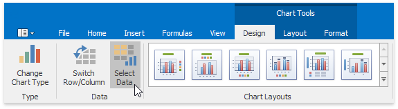

Creating a Chart Sheet
The Spreadsheet allows you to create two chart types: an embedded chart inserted into an existing worksheet and a standalone chart placed on a separate sheet in a workbook - a chart sheet. Chart sheets are useful when you need to show or print a chart on a page without any worksheet data.
Select the action you wish to perform:
Insert a New Chart Sheet
On the Sheet tab bar, right-click an existing worksheet's tab and select Insert... in the context menu.

Select Chart in the invoked dialog and click OK.

As a result, an empty chart sheet with a default name is added to the document.
Select the chart data by clicking Select Data in the Data group, on the Chart Tools | Design tab...

... or by right-clicking an empty chart area and clicking Select Data... in the context menu.

In the invoked Select Data Source dialog, enter a reference to the cell range containing the chart data. You can use the Collapse Dialog button
 to select this range directly in a worksheet.
to select this range directly in a worksheet.
The Spreadsheet creates a clustered column chart by default.
To change the default chart type, click Change Chart Type in the Type group, on the Chart Tools | Design tab...

... or right-click a chart and select Change Chart Type... in the context menu.

In the invoked Change Chart Type dialog, select a new chart type and click OK.

Use other options on the Chart Tools contextual tab to fine-tune chart settings like applying a chart style and adjusting the chart's layout.
Move an Existing Chart to a Chart Sheet
To move an existing chart from a worksheet to a separate chart sheet, follow the steps below:
Click Move Chart in the Location group, on the Chart Tools | Design tab...

... or right-click the chart and select Move Chart... in the context menu.

In the invoked dialog, select New Sheet and then enter a chart sheet name. Click OK to create a chart sheet with the specified chart.

Remove a Chart Sheet
To delete a chart sheet, right-click its tab on the Sheet tab bar, and then click Delete in the context menu.

If you want to preserve a chart located on a chart sheet, you can move the chart back to the worksheet containing the source data or place it on another worksheet. Click Move Chart in the Location group, on the Chart Tools | Design tab to invoke the Move Chart dialog. Select the necessary worksheet from the Object in list and click OK.

As a result, the Spreadsheet removes the chart sheet and moves its chart to the specified worksheet. You can change the chart's location and resize it.